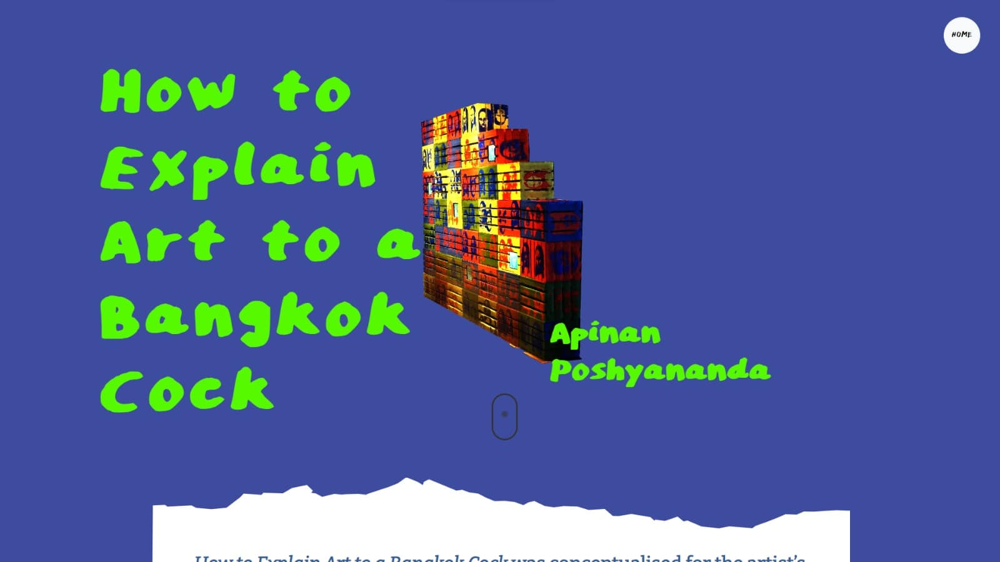
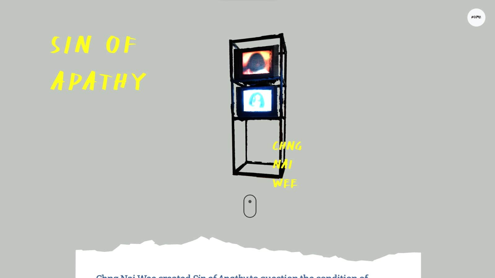
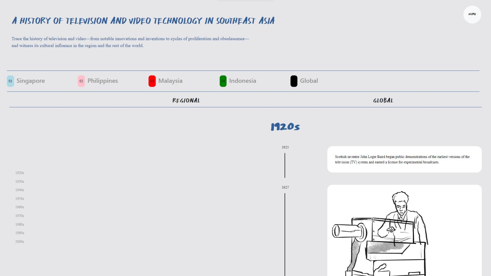

Art, technology and digital storytelling.
Developed an interactive companion website for the National Gallery Singapore's "See Me See You" exhibition, collaborating with creative agency Do Not Design. The microsite is a digital companion to the physical exhibition, offering a visual timeline of artworks and in-depth information about each piece.
The project sits at the intersection of art, technology and storytelling, creating an accessible platform that enhances the gallery experience and makes the exhibition's narrative available beyond the physical space.
A digital companion for Southeast Asia's premier art museum.
The National Gallery Singapore houses the world's largest public collection of Singapore and Southeast Asian art. For "See Me See You", they wanted a digital experience that would:
- Complement the physical exhibition with an interactive online presence.
- Engage younger, tech-savvy audiences with innovative web experiences.
- Extend the exhibition's reach to international audiences unable to visit in person.
Rich visuals without overwhelming the content.
Creating an engaging digital companion for a physical exhibition presented several unique challenges:
- Designing an intuitive timeline interface to showcase the artworks chronologically.
- Presenting detailed artwork information in an engaging, accessible way.
- Creating smooth 3D visual elements and interactions without overwhelming the content.
- Balancing visual richness with performance and load times.
- Ensuring the experience worked seamlessly on both desktop and mobile devices.
An interactive companion, enhanced with Three.js.
Built an interactive companion website using Three.js for visual enhancements, creating a seamless digital experience.
“Digital companions should enrich understanding and appreciation of art, making complex narratives accessible to all.”
Interactive timeline
A visual timeline of the exhibition's artworks in chronological order, letting users explore the narrative flow of the show.
Detailed artwork pages
In-depth information for each piece, including artist backgrounds, historical context, themes and curatorial insights.
3D visual elements
Three.js effects and transitions that enhance browsing without distracting from the content.
Responsive design
Optimized for desktop, tablet and mobile with adaptive layouts, and fast loading while keeping the visuals rich.
Built for exploring.
- Interactive timeline – chronological visualization of exhibition artworks, so users can explore the narrative progression of the show.
- Comprehensive artwork information – detailed pages featuring artist backgrounds, historical context, themes and curatorial insights.
- Three.js visual enhancements – subtle 3D effects and animations that add polish without distracting from the content.
- Multi-device support – fully responsive design across desktop, tablet and mobile.
- Fast, accessible experience – quick loading times with semantic HTML and keyboard navigation support.
A front-end-only build with thoughtful 3D.
As a front-end-only companion website, the project focused on an engaging, informative experience with careful use of 3D enhancements.
Artwork information pages
- Detailed pages for each artwork with high-quality images.
- Structured content including artist bios, historical context and themes.
- Clean typography and layout prioritizing readability.
- Easy navigation between artworks and back to the timeline.
Three.js visual enhancements
- Subtle 3D effects and transitions that add interest without overwhelming content.
- Performance-optimized rendering to keep interactions smooth.
- WebGL effects that degrade gracefully on older devices.
Performance & accessibility
- Fast initial load times with progressive enhancement.
- Responsive images optimized for different screen sizes.
- Semantic HTML structure for screen reader compatibility.
Tech stack
3D & graphics
- Three.js
- WebGL
- GLSL shaders
Frontend
- HTML5
- CSS3
- JavaScript (ES6+)
Tools & workflow
- Git version control
- Browser DevTools
- Performance profiling
Working with Do Not Design.
Working with creative agency Do Not Design involved close collaboration throughout development.
Design implementation
Translated creative vision into functional 3D experiences, working iteratively with designers.
Technical consultation
Advised on technical feasibility and the performance implications of design choices.
Stakeholder communication
Regular presentations to National Gallery stakeholders, incorporating their feedback.
Quality assurance
Rigorous testing across devices and browsers to ensure a consistent experience.
Restraint is a feature.
Challenge: Creating an engaging timeline interface that works on both desktop and mobile, with different interaction patterns.
Solution: Implemented adaptive timeline controls: horizontal scrolling with mouse drag on desktop and vertical scroll with touch gestures on mobile. Added clear visual indicators for navigation and kept performance smooth on both.
Challenge: Balancing rich visual effects with fast load times and smooth performance, especially on mobile.
Solution: Used progressive enhancement: core content loads immediately with basic styling, then Three.js effects load in the background. Combined with efficient asset loading and optimized images, this delivered a sub-2-second initial load with smooth 60fps animations.
Learning: Advanced technologies like Three.js should enhance content, not overshadow it. Working with a cultural institution showed me that technology is a tool for making cultural content more accessible, not an end in itself. And collaborating with Do Not Design taught me to translate concepts like "elegant transitions" and "engaging timeline" into concrete decisions about animation timings, scroll behavior and information architecture.
A lasting digital archive.
- Launched alongside the physical exhibition in October 2023.
- Featured on National Gallery Singapore's main website as the official exhibition companion.
- Sub-5-second initial load time with smooth 60fps animations.
- Remained live through early 2024, serving as a lasting digital archive of the exhibition.
Website sections.



